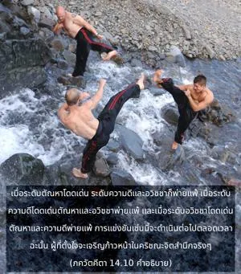
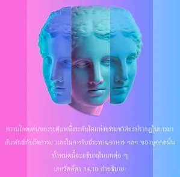

บางครั้งระดับความดีโดดเด่น ชนะระดับตัณหาและอวิชชา โอ้ โอรสแห่ง ภรต บางครั้งระดับตัณหาชนะความดีและอวิชชา และบางครั้งระดับอวิชชาชนะความดีและตัณหา เช่นนี้จะมีการแข่งขันเพื่อความยิ่งใหญ่อยู่เสมอ


เมื่อระดับตัณหาโดดเด่น ระดับความดี และอวิชชาก็พ่ายแพ้ เมื่อระดับความดีโดดเด่น ตัณหา และอวิชชาก็พ่ายแพ้ และเมื่อระดับอวิชชาโดดเด่น ตัณหา และความดีก็พ่ายแพ้ การแข่งขันเช่นนี้จะดำเนินต่อไปตลอดเวลา ฉะนั้น ผู้ที่ตั้งใจจะเจริญก้าวหน้าในกฺฤษฺณจิตสำนึกจริงๆ ต้องข้ามให้พ้นเหนือทั้งสามระดับนี้ ความโดดเด่นของระดับหนึ่งระดับใดแห่งธรรมชาติจะปรากฏในการมาสัมพันธ์กับกิจกรรม และในการรับประทานอาหารของบุคคลนั้น ทั้งหมดนี้จะอธิบายในบทต่อๆ ไป แต่หากใครปรารถนาเขาก็สามารถพัฒนาด้วยการปฏิบัติตนในระดับความดี และเอาชนะระดับอวิชชาและตัณหาได้ ถึงแม้ว่ามีสามระดับแห่งธรรมชาติวัตถุนี้ หากมีความมั่นใจเราอาจได้รับพรจากระดับความดี และเมื่อข้ามพ้นเหนือระดับความดี เราจะสถิตในความดีที่บริสุทธิ์ เรียกว่า ระดับ วสุเทว ซึ่งเป็นระดับที่เราสามารถเข้าใจศาสตร์แห่งองค์ภควานฺ จากกิจกรรมต่างๆ ที่ปรากฏทำให้เข้าใจได้ว่าบุคคลนี้สถิตในระดับใดของธรรมชาติ